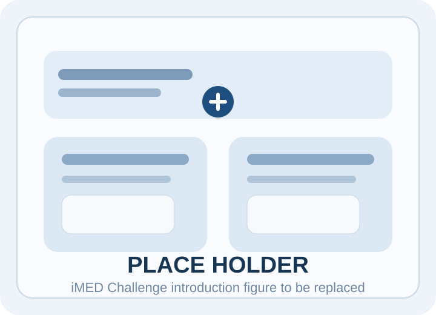
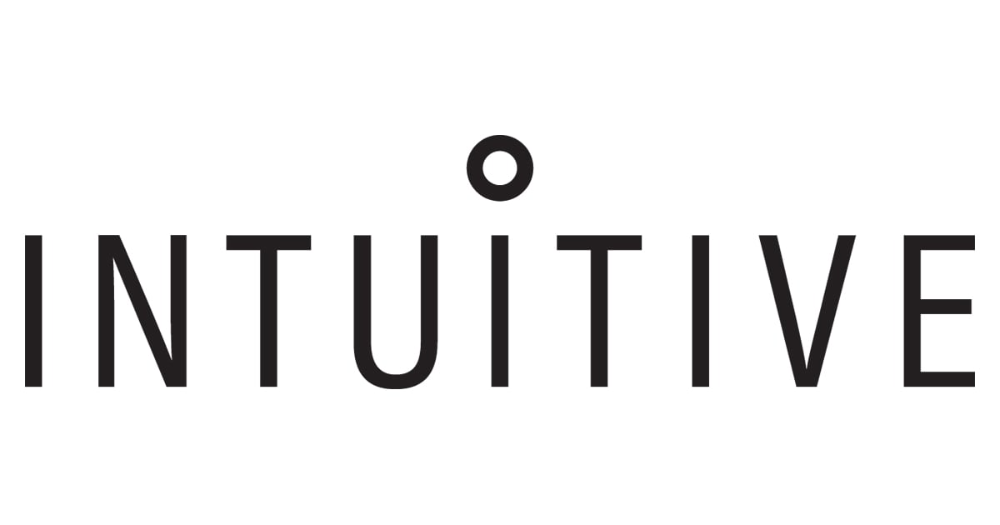

Multi-Endoscope Dataset Novel View Synthesis Challenge
The iMED Challenge benchmarks two core problems in surgical vision: relative pose estimation between synchronized endoscopes and deformable novel view synthesis under realistic tissue motion, tool interaction, and constrained viewpoints.

Description
Vision-based 3D reconstruction is a foundational capability for surgical guidance, scene understanding, and future autonomy in minimally invasive procedures. The iMED Challenge focuses on this problem under the difficult conditions that matter most in practice: deforming anatomy, specular surfaces, limited viewpoints, and tool-tissue interaction. The challenge is built on synchronized dual-endoscope data and is intended to evaluate how well methods generalize to unseen anatomical scenes instead of merely interpolating within an easy capture setup.
Objective
Advance robust 3D surgical vision by benchmarking methods for accurate relative camera pose estimation and deformable novel view synthesis in endoscopic scenes.
Motivation
Traditional Structure-from-Motion pipelines struggle in surgical videos because tissue deforms, anatomical regions may be weakly textured, and specular highlights violate photometric assumptions. Data-driven approaches also remain difficult to train reliably because public datasets are limited and surgical imagery differs substantially from natural-image pretraining corpora. iMED is designed to provide a cleaner benchmark for these hard but clinically meaningful settings.
Tasks
Task 1: iMED PE
Primary ranking: ATEEstimate the relative pose between two endoscopes in moving-camera surgical sequences. Methods must remain stable under tissue deformation, reflections, limited texture, and constrained views.
Task 2: iMED NVS
Primary ranking: PSNRSynthesize novel views in deforming surgical scenes using a train-on-one-endoscope, test-on-another setup. The benchmark is meant to reward actual geometric and temporal understanding rather than simple view interpolation.
News
- April 15, 2026 Proposal-target date for participant registration opening and public release of challenge materials.
Timeline
- April 15, 2026 Registration opens, challenge website launch, dataset release, and evaluation tooling release.
- xx xx, 2026 Optional Docker compatibility testing opens; public validation submissions begin.
- xx xx, 2026 Final Docker submission deadline.
- xx xx, 2026 Structured method report deadline.
- xx xx, 2026 Final evaluation results shared with participants.
- xx xx, 2026 EndoVis / MICCAI challenge day, with exact date still to be announced.
Organizers
| Name | Institution |
|---|---|
| Sierra Bonilla | University College London |
| John Han | Vanderbilt University |
| Tianyi Song | University College London |
| Adam Schmidt | Intuitive Surgical, Inc. |
| Omid Mohareri | Intuitive Surgical, Inc. |
| Francisco Vasconcelos | University College London |
| Sophia Bano | University College London |
Sponsors
